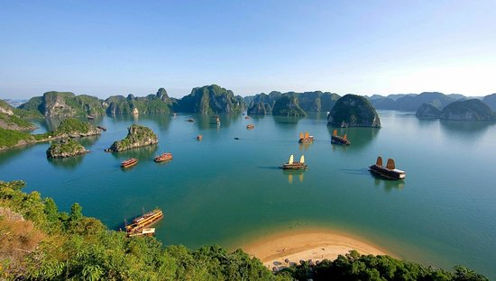

Day 1 - 2: Arrival in Hanoi
Hanoi: The capital city is a vibrant mix of old
and new, with
historic temples, bustling markets, and delicious street food.
Don't miss the Old Quarter and the serene Hoan Kiem Lake.
- Morning: Arrive in Hanoi and check into your
hotel.
- Afternoon: Explore the Old Quarter and Hoan Kiem
Lake.
- Evening: Enjoy a traditional Vietnamese dinner and
maybe catch a water puppet show.
Day 3 - 4: Hanoi to Halong Bay

Halong Bay, a UNESCO World Heritage site, is renowned for its stunning natural beauty, featuring emerald waters dotted with limestone karsts and islands
- Morning: Drive or take a shuttle to Halong Bay .
- Afternoon: Board a cruise ship and explore the bay’s stunning limestone formations.
- Evening: Enjoy dinner on the cruise and relax.
Day 5: Hue
Hue: This ancient city, once the capital of Vietnam, is home to the Imperial City, royal tombs, and pagodas, providing a glimpse into the country's imperial past.
- Morning: Visit the Imperial City and the Thien Mu Pagoda.
- Afternoon: Explore the royal tombs, such as Tu Duc’s Tomb or Khai Dinh’s Tomb.
- Evening: Enjoy a boat ride on the Perfume River.
Day 6: Hue to Hoi An
Hoi An: A charming town known for its well-preserved Ancient Town, lantern-lit streets, and beautiful beaches. Hoi An is also famous for its tailor shops and delicious cuisine.
- Morning: Travel from Hue to Hoi An by car or train (approximately 3 hours)
- Afternoon: Check into your hotel and start exploring Hoi An’s Ancient Town.
- Evening: Enjoy a lantern-lit evening and try some local cuisine.